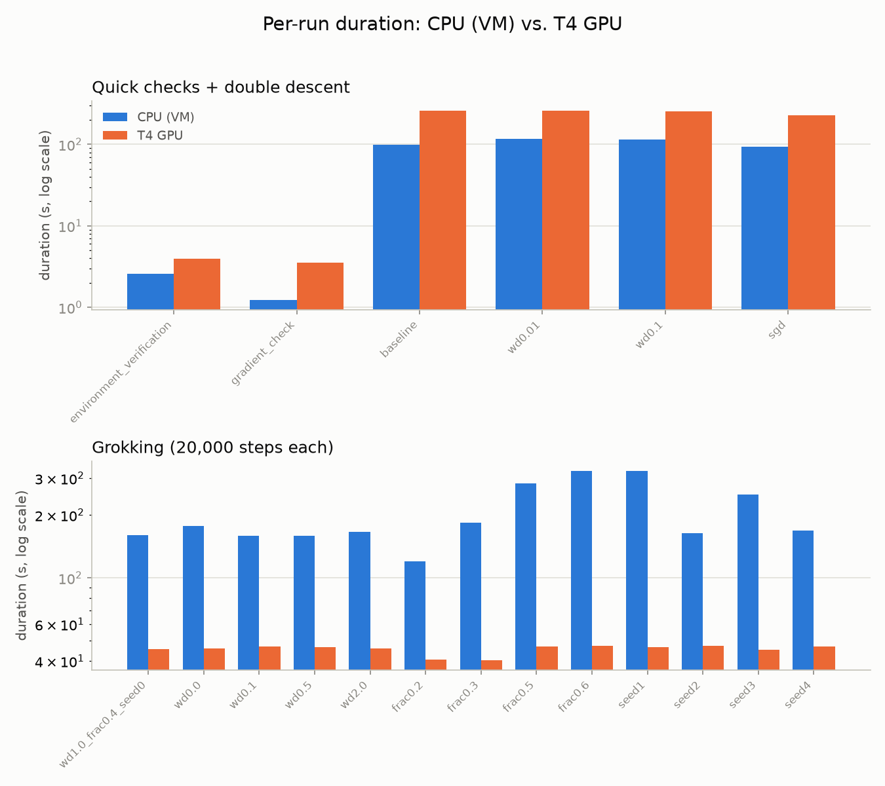

Same 17-run suite, same code, two machines. Does a GPU actually help, and does the science (double descent, grokking) agree regardless of hardware?
| Field | CPU (VM) | T4 GPU |
|---|---|---|
| CPU | 13th Gen Intel(R) Core(TM) i9-13900HX | Intel(R) Xeon(R) CPU @ 2.00GHz |
| Cores / threads | 16 | 2 |
| Memory | 6.2 GiB | 12.7 GiB |
| GPU | none (CPU only) | Tesla T4 (14.6 GiB) |
| OS | Windows 2025Server | Linux 6.6.122+ |
| Python | 3.14.7 | 3.13.15 |
| torch | 2.14.0+cpu | 2.11.0+cu128 |
Both run in a couple of seconds either way — this is Python/import startup, not a meaningful hardware comparison.
| Run | CPU (VM) | T4 GPU | Speedup |
|---|---|---|---|
| Quick checks (a couple seconds either way -- Python/import startup dominates, not compute) | |||
| Environment verification | 2.6s | 4.0s | T4 GPU 1.54x slower |
| Gradient check | 1.2s | 3.5s | T4 GPU 2.88x slower |
The double-descent model is tiny (max hidden width 575, ~500 training examples) — small enough that T4 GPU's per-step kernel-launch overhead can outweigh its parallelism advantage.
| Run | CPU (VM) | T4 GPU | Speedup |
|---|---|---|---|
| Double descent sweep | |||
| Double descent: baseline | 1m 39.9s | 4m 20.8s | T4 GPU 2.61x slower |
| Double descent: wd=0.01 | 1m 57.3s | 4m 18.0s | T4 GPU 2.20x slower |
| Double descent: wd=0.1 | 1m 53.8s | 4m 16.6s | T4 GPU 2.25x slower |
| Double descent: SGD | 1m 33.9s | 3m 48.6s | T4 GPU 2.43x slower |
The grokking model is bigger (9409 pairs, embed dim 32, hidden dim 256) — here T4 GPU's advantage shows clearly and consistently across all 13 runs.
| Run | CPU (VM) | T4 GPU | Speedup |
|---|---|---|---|
| Grokking (20,000 steps each) | |||
| Grokking baseline (wd=1.0, frac=0.4, seed=0) | 2m 40.6s | 45.6s | T4 GPU 3.52x faster |
| Grokking: wd=0.0 | 2m 57.2s | 45.9s | T4 GPU 3.86x faster |
| Grokking: wd=0.1 | 2m 38.9s | 46.9s | T4 GPU 3.39x faster |
| Grokking: wd=0.5 | 2m 38.6s | 46.5s | T4 GPU 3.41x faster |
| Grokking: wd=2.0 | 2m 45.9s | 46.0s | T4 GPU 3.61x faster |
| Grokking: frac=0.2 | 1m 59.9s | 40.7s | T4 GPU 2.95x faster |
| Grokking: frac=0.3 | 3m 3.5s | 40.3s | T4 GPU 4.56x faster |
| Grokking: frac=0.5 | 4m 43.3s | 47.1s | T4 GPU 6.02x faster |
| Grokking: frac=0.6 | 5m 25.9s | 47.4s | T4 GPU 6.88x faster |
| Grokking: seed=1 | 5m 23.8s | 46.6s | T4 GPU 6.94x faster |
| Grokking: seed=2 | 2m 43.8s | 47.4s | T4 GPU 3.46x faster |
| Grokking: seed=3 | 4m 10.0s | 45.2s | T4 GPU 5.53x faster |
| Grokking: seed=4 | 2m 48.1s | 47.0s | T4 GPU 3.58x faster |

Speed aside, the reported phenomena should not depend on which machine ran them. Absolute numbers differ (different RNG streams between CPU and CUDA even at the same seed — see SEED_AUDIT.md), but every qualitative conclusion below matches.
| Variant | CPU (VM) peak | T4 GPU peak | CPU (VM) threshold | T4 GPU threshold | Conclusion |
|---|---|---|---|---|---|
| baseline | 0.3438 @ w77 | 0.3422 @ w77 | 64 | 64 | agree |
| wd0.01 | 0.2982 @ w192 | 0.298 @ w306 | never | never | agree |
| wd0.1 | 0.29 @ w2 | 0.29 @ w2 | never | never | agree |
| sgd | 0.3712 @ w19 | 0.3708 @ w19 | 29 | 29 | agree |
| Variant | CPU (VM) step | T4 GPU step | Conclusion |
|---|---|---|---|
| baseline | 8300 | 8600 | agree |
| wd0.0 | never | never | agree |
| wd0.1 | never | never | agree |
| wd0.5 | never | never | agree |
| wd2.0 | 3600 | 3500 | agree |
| frac0.2 | never | never | agree |
| frac0.3 | 14900 | 12800 | agree |
| frac0.5 | 4900 | 4900 | agree |
| frac0.6 | 3100 | 3000 | agree |
| seed1 | 7600 | 7700 | agree |
| seed2 | 9000 | 10000 | agree |
| seed3 | 5300 | 5300 | agree |
| seed4 | 8100 | 8600 | agree |